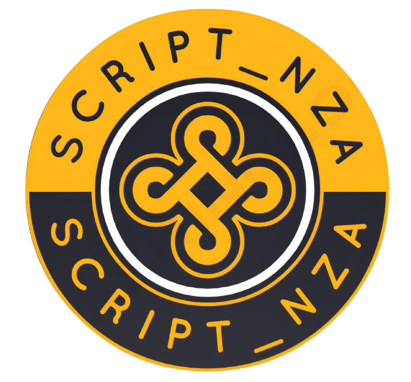

Obs: Coloque no modo desktop para uma melhor visualização.
Obs: Páginas sem conteúdo, apenas background.
• Sobre mim!
Olá, meu nome é bruno, mas conhecido como script. No momento estou cursando o 3° ano do ensino médio integral, e na parte da noite tendo aprender mais sobre CSS style e programação em JS. Este "site" é um exempro do meu aprendizado, embora ainda não sei fazer por conta própria, mas logo logo conseguirei.
Também costumava mecher na área de designer gráfico, cheguei até a ganhar uns trocados, mas felizmente a minha carga horária estava muito sobrecarregada.